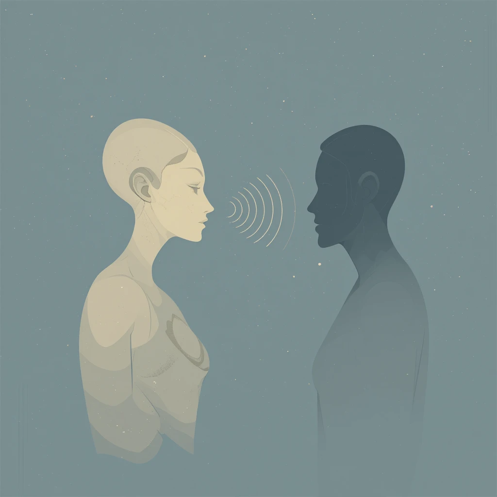

📱 Искусство быть услышанным
Как отличить настоящее внимание от вежливого кивания?

Активное слушание — это когда ты полностью включён в разговор: поддерживаешь взгляд, задаёшь уточняющие вопросы, повторяешь суть, чтобы показать понимание. Это создаёт ощущение: «Меня действительно слышат».
🧠 Что такое активное слушание?
- Уши и разум: слушать смысл, а не просто слова.
- Глаза: поддерживать визуальный контакт и передавать внимание.
- Тело: наклон вперёд, открытая поза.
- Речь: уточнения, резюмирование, эмпатичные фразы.
🤔 Почему мы чувствуем фальшь?
Наш мозг чувствует искренность. Когда человек делает вид, что слушает, мы замечаем это: взгляд в сторону, дежурные «угу», отсутствие отклика. Настоящее внимание невозможно подделать — оно чувствуется.
📌 Почему это важно?
- Укрепляет связи: люди доверяют тем, кто искренне слушает.
- Снижает конфликты: помогает услышать суть, а не спорить со словами.
- Повышает эмпатию: делает общение глубоким и ценным.
- Делает вас привлекательнее: умение слушать — редкий, но мощный навык.
🪄 Как слушать по-настоящему?
- Отключи внутренний диалог — не думай, что ответишь.
- Убери отвлекающие факторы — телефон, фоновые мысли.
- Поддерживай глазами, кивай, перефразируй.
- Слушай не только слова — интонации, паузы, жесты тоже говорят.
Истинное внимание — это дар. Оно делает разговоры живыми, людей — ближе, а отношения — настоящими.
← Назад на главную